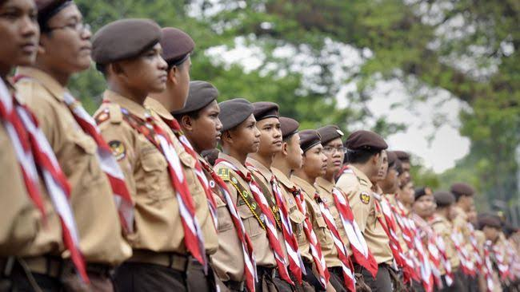
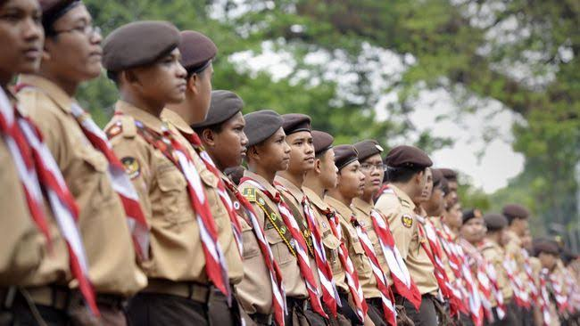

Profil Sekolah
MTs Darul Ulum Cimahpar adalah Madrasah Tsanawiyah swasta yang berlokasi di Jalan Raden Khanifiah, Cimahpar, Kota Bogor, Jawa Barat. Didirikan pada 1 Januari 1970, sekolah ini berada di bawah naungan Kementerian Agama dan berstatus akreditasi B berdasarkan SK Akreditasi Nomor 1347/BAN-SM/SK/2021 yang berlaku hingga 31 Desember 2026.
Visi dan Misi
Visi: Mewujudkan lembaga pendidikan yang aman dan nyaman dengan pembinaan iman, ilmu, dan amal guna melahirkan generasi muda yang berakhlak mulia.
Misi:
- Membangun generasi Islami yang berakhlak mulia.
- Menumbuhkan semangat dan prestasi baik akademik maupun non-akademik.
- Membantu mewujudkan sikap mandiri melalui bimbingan berorganisasi dan latihan-latihan keterampilan.
Fasilitas Sekolah
MTs Darul Ulum dilengkapi dengan berbagai fasilitas untuk mendukung proses belajar mengajar, di antaranya:
- Ruang Kelas yang Nyaman
- Laboratorium Komputer
- Perpustakaan yang Lengkap
- Musholla Untuk Sholat
- Kantin Sekolah
Ekstrakurikuler
- Futsal
- Silat
- Pramuka
- PMR
- Paskibra

 

Kontak Kami
Alamat: Jalan Traa No. 123, Kota Bogor
Email: info@sekolahcontoh.sch.id
Telepon: (021) 123-4567